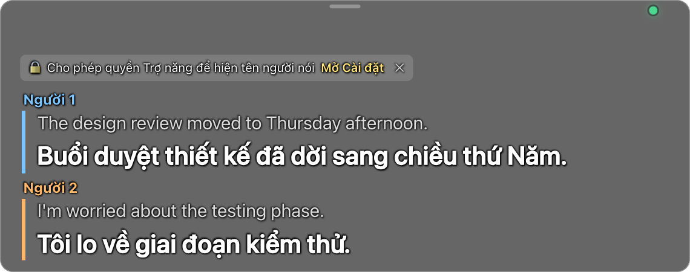
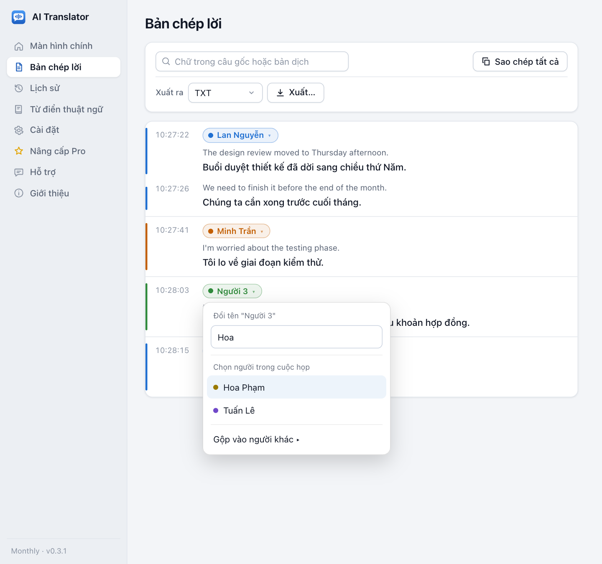
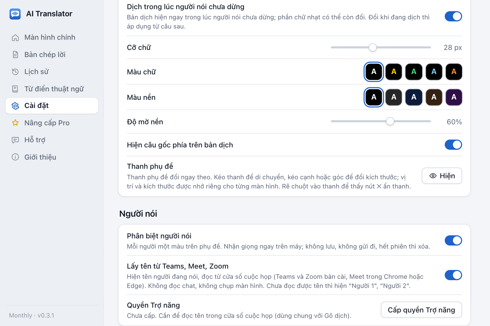

Dựng trên giao diện thật của app (dữ liệu mẫu). Chỉ để xem trước, chưa sửa code app.
Tên lấy từ Teams/Meet/Zoom ("Lan Nguyễn", "Minh Trần"); người chưa đọc được tên hiện "Người 3". Câu tiếp theo của cùng người chỉ có vạch màu.
Vẫn phân biệt Người 1, Người 2; một dòng mời cấp quyền, bấm "Mở Cài đặt" hoặc ✕ để ẩn. Chỉ hiện khi thanh chưa khóa.

Đổi tên áp dụng cho mọi câu của người đó trong phiên; danh sách "Chọn người trong cuộc họp" lấy từ tên hiện trên cửa sổ họp.

Hai công tắc bật sẵn và trạng thái quyền Trợ năng (dùng chung với Gõ dịch). Windows không có dòng quyền Trợ năng.
